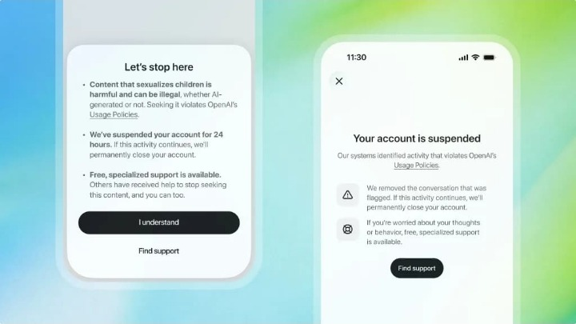

OpenAI on Monday announced a new image classifier designed to detect child sexual abuse material (CSAM), including material generated by artificial intelligence. The company built the tool with assistance from the National Center for Missing & Exploited Children (NCMEC), a US child-protection organisation.
The classifier is free to organisations that apply to OpenAI and are approved. To qualify, they must have a way to review flagged content by hand and report it to NCMEC. The tool gives each image two scores, one for suspected abuse material and one for suspected AI-generated abuse material. It also works with Coop, a free safety tool from the non-profit ROOST that organisations can use to review and report flagged images.
Warnings and suspensions in ChatGPT

OpenAI is also changing how ChatGPT responds to users who seek this material. The screens published with coverage of the launch show a warning that content sexualising children is harmful and can be illegal. The flagged conversation is removed and the account is suspended for 24 hours. If the activity continues, the account is permanently closed. The screens also point users to free, specialised support.
What OpenAI says about its limits
OpenAI has published a model card for the classifier, which explains how it was built and tested. According to ROOST, the card says the tool performs less well on images of the youngest children and for some demographic groups, and that it has not yet been tested on video. ROOST described it as the first model card for a CSAM classifier.